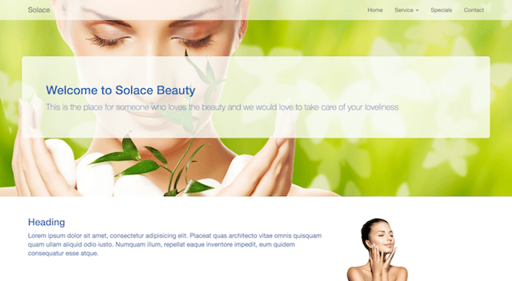

Projects...

Car Rental was a project that I created during my uni study. I redesigned it after I finished my degree. The older was out fashion, this is the new one with modern design.
take look
Color Guessing Game is a game that I created during my uni study. I used lots of Javascript to create this game. The player can guess the color based on the RGB number.
take look

Solace is a beauty saloon based in Hamilton, New Zealand. I helped my friend to create this website by using powerful BootStrap and jQuery.
take look
Tongriro National Park is a project which was designed by Jenny who is a graphic designer. I used bunch of CSS to make it online. All the images in websites were taken by myself.
take look